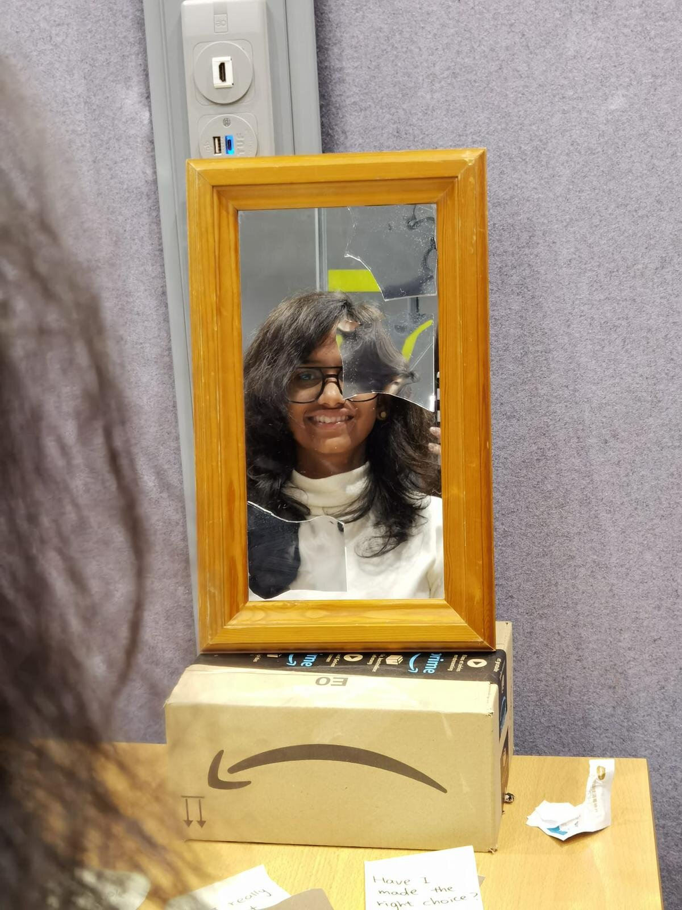
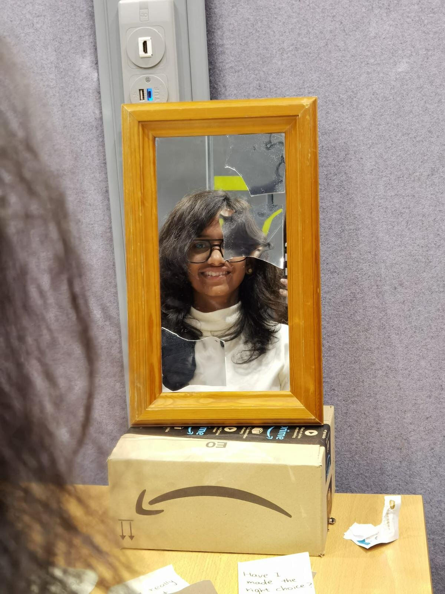

Week 1
Never in my life have I consciously thought about whether boredom is helping me, until today. As I started thinking, I can relate and pick so many values that boredom can actually provide me. The project began with my new group involving Amber, Michelle
and I who were present in the class to start with, while Lara was sick and Boxin was back in China, preparing to join us soon in-person. The three of us started off with ‘Directed storytelling’, one of the research methods
that we had to use for this project. We interviewed each other and jotted down interesting feedback or insights from each of our experiences. We updated Lara and Boxin over whatsapp and kept them informed about our journey.
We interviewed both of them virtually the next day with directed storytelling and got a couple other insights. Over the weekend, we narrowed down to the values we felt to be strong, convincing, and effective to be communicated.
Those were, how boredom tells us to have a change of action, choices, etc, how it allows us to spend self-time with ourselves to have self-reflections and thoughts, how it helps to discover the hidden talents or creativity
and how it gives us the rest needed for our brain to function better later.
 
